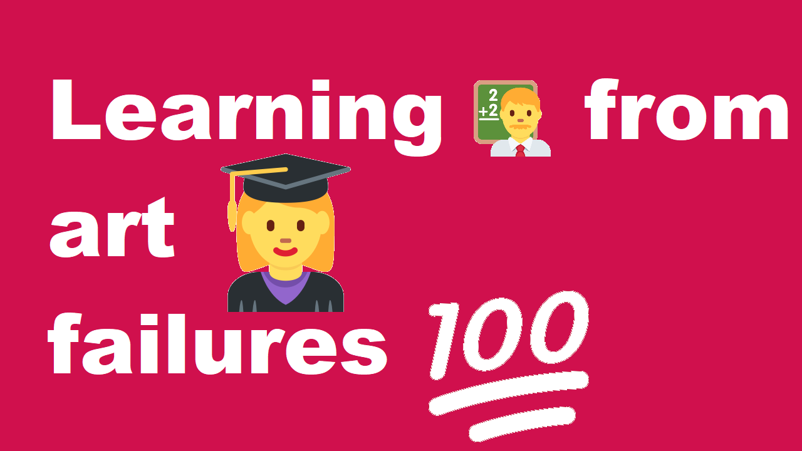

Learning 🧑🏫 from Art 🎨 Failure

Repeat after me, failure isn't always a bad thing. From our schooldays, we learn that failure is something to avoid at all costs. To this day, I often get a gut sinking feeling when I fail. School doesn't offer wiggle room for failure. This was done intentionally. This limits creativity and instills fear of failure within people. In life or death matters, failure matters. But while drawing, failure often means scrapping a piece of paper. Or clearing your digital canvas... It is going to take time and effort to learn from failure. But don't accept it! You can succeed.
Let's rewire your brain 🧠 Well over your drawing career that is. Let's say you are trying to draw a chair 🪑 and you attempt to draw it, but what you have drawn isn't what you see. This is going to happen to you a lot and often. It takes a lot of drawing skill to draw what you see. But perhaps you don't want to draw what you see. Perhaps you are trying to make a cool design. More often, you are trying to learn from what you see.
You tried to draw the chair 🪑 but you look at what you drew ✍️ and it doesn't look correct. If you can't tell what is wrong with your chair, I suggest you reach out to some community on Reddit.com or a local Meetup.com community to get feedback on your chair. Ultimately, I recommend drawabox.com for those of you starting out drawing. You can pay 5$ a month for critique feedback on lesson material. I believe after completing drawabox and giving a lot of free critique to others got me to the point in which I can critique my own work. Now am I perfect, absolutely not. But I feel like I can point out a lot of my issues without having to reach out to others. Don't hesistate reaching out if you truly need help.
Reaching out to others if you need help is crucial. No one can learn in isolation. Given enough time, I am sure I can find some drawing skill that I am bad at. I am not a professional drawer yet, but even I know that I will need to reach out to a community or pay for feedback to improve at what I don't know. I hope I leave you with knowing that failure is an opportunity to learn a lesson. Not an ending that you can no longer do anything more. You can do it! Accept that the failure chair 🪑 will always be there at some point, right next to success 🪑. Even after you succeed, you may fail at drawing a good chair again. Drawing is no easy task. Being able to draw the same thing twice is possible, right over the next mountain of failed chairs 🪑 ~Lars out